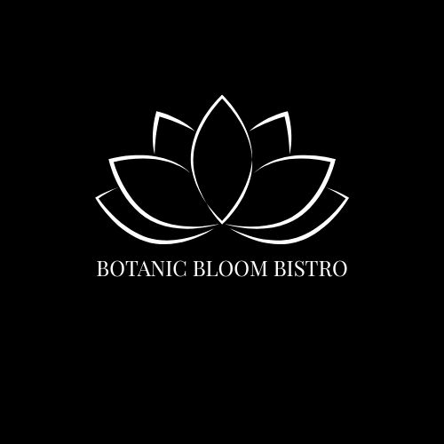

-

Back of Take-Home Menu
The exterior tri-fold menu layout, combining the starters panel with the cover, and a dedicated info panel featuring opening hours, contact info, and a QR code.
-

Front of Take-Home Menu
The interior panel of the tri-fold menu, displaying clear visual hierarchy across signature entrees, drinks, and desserts paired with vibrant item status badges.
-

Front of Business Card
The informational front-of-card layout, organizing opening hours, contact info, and a QR code linking to the online reservation system.
-

Back of Business Card
The back of the business card design, highlighting the centered white lotus custom logo and website URL, set against a solid sage green backdrop, and framed by botanical line art.
Context: Inspired by a brand collateral project completed as a class assignment, the Botanic Bloom Bistro Brand Identity System explores the graphic identity of an original, restaurant business concept. The main goal was to build a cohesive visual system across physical deliverables where each item feels unique while sharing a unified brand identity. The key deliverables include a take-home print menu designed with clear visual hierarchy— balancing headers, food items, and category tags, alongside contact information, operating hours, and a QR code linking to the online menu and reservation requests. The project also features business collateral, including a corporate letterhead and business card, built using clean typography and strict layout rules to maintain professional business standards. Across all deliverables visual continuity is achieved by seamlessly implementing a colour palette, floral motifs, and readable type styles throughout every deliverable.
Goal: To create a unified, brand identity system for an original restaurant business concept by translating established visual rules– such as a custom logo, floral motifs, and selected typefaces– across distinct physical mediums, including a tri-fold menu, corporate letterhead, and a business card.
Process & Iterations:
Note: Any mention to QR code links and normal in-text links do not actually link to different sections or elements of any deliverables.

Step 1
Established core brand identity guidelines– designing a minimalist lotus logo, selecting an earthy colour palette, defining typographic hierarchies, and designing custom floral line-art motifs.
Step 2
Translated the visual identity rules across distinct physical print media, developing structured layouts for a tri-fold menu, corporate letterhead, and business card while maintaining visual continuity.
Step 3
Incorporated functional print elements– including operating hours, contact details, and a QR code– to directly connect the physical deliverables to the digital menu and reservation system.
The Challenges:
- Adapting Brand Deliverables Across Distinct Formats: Translating core visual identity rules– such as logo sizing, typography, and floral motifs– across different orientations and sizes, from a compact business card to a detailed tri-fold menu layout.
- Balancing Information Density and Visual Hierarchy: Structuring high-density menu info, pricing, category tabs, and business hours without cluttering the layout or sacrificing brand design and legibility.
- Bridging Physical Print with Digital CTAs: Seamlessly implementing functional digital CTAs, such as QR codes, into traditional print collateral without disrupting the aesthetic.
Key Features & Highlights:
- Unified Brand Identity Suite: Designed a comprehensive physical brand identity system– including a tri-fold menu, corporate letterhead, and business card– connected by an established set of visual rules, including a custom-designed logo, selected colour palette, clean typography, and floral motif borders.
- Structured Tri-Fold Take-Home Menu: Formatted a clear three-panel hierarchy, balancing section headers, item pricing, and status badges ("Popular", "Seasonal", "New") with CTAs, such as opening hours, contact info, and QR code links.
- Corporate Letterhead: Designed a custom business deliverable, featuring clean header contact alignment, delicate floral motif dividers, and structured layout rules.
- Dual-Sided Business Card: Created a complete business card layout that features essential contact info and opening hours. It also contains continued visual elements such as the floral motif border, custom logo, and a QR code linking directly to the online menu and reservation system.
- Professional Layout Precision: Implemented precise typographic alignment, balanced margins, and consistent spatial hierarchies across all print collateral to maintain realistic business standards.